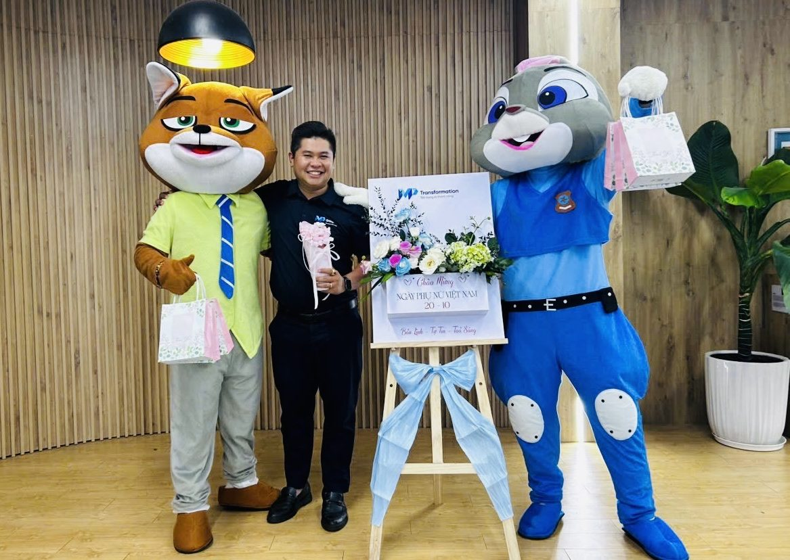
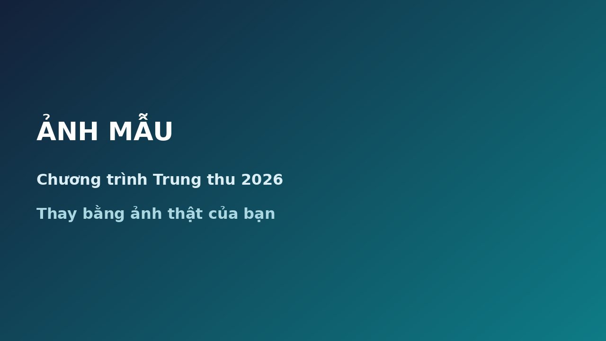

01 / 05Khi hotline luôn quá tải
Vì sao nhiều Contact Center luôn quá tải?
Quá tải thường không chỉ là chuyện thiếu người. Điều gì đang thật sự đẩy hàng chờ dài ra?
Xem chi tiếtBUSINESS × TECHNOLOGY × CUSTOMER EXPERIENCE
Banking Solutions Sales Manager tại Minh Phúc Transformation (MPT)
Công nghệ quyết định tốc độ. Con người quyết định niềm tin.
Tôi giải mã những gì diễn ra phía sau mỗi cuộc gọi hotline ngân hàng, từ góc nhìn của người từng triển khai hệ thống.
Hơn 10 năm làm công nghệ, tôi nhìn Contact Center từ cả ba phía: người viết code, người triển khai hệ thống và người tư vấn giải pháp. Thông qua chuỗi Contact Center Insights, tôi chia sẻ những góc nhìn và trải nghiệm thực tế, giúp các nhà quản lý hiểu sâu hơn về hệ thống đang vận hành và nhận diện cơ hội tối ưu.
Lần đầu bước vào một Contact Center, tôi đến đúng giờ cao điểm. Hàng dãy bàn ghế, điện thoại đổ chuông liên tục, mỗi agent đang nói chuyện với một khách hàng, mỗi cuộc gọi là một câu chuyện khác nhau, hết cuộc này đến cuộc khác. Tiếng nói chuyện ồn ào, huyên náo, nhưng mọi thứ vẫn có quy tắc.
Tôi bắt đầu bằng telesale từ khi còn là sinh viên, tức là nói chuyện trực tiếp với khách hàng. Từ năm 2016, tôi chuyển sang kỹ thuật: hỗ trợ kỹ thuật, kỹ sư phần mềm, trưởng nhóm phát triển CRM, rồi trưởng nhóm triển khai kiêm quản lý dự án, phụ trách tích hợp tổng đài, core banking và voicebot. Làm dự án đủ lâu, tôi nhận ra một điều: nhiều nhu cầu thật của khách hàng chỉ hiện ra khi dự án đã bắt đầu. Lúc đó, thường đã muộn để làm khác đi. Tôi muốn gặp khách hàng sớm hơn, nghe họ trăn trở ngay từ đầu và cùng tìm giải pháp phù hợp. Năm 2026, tôi chuyển sang tư vấn giải pháp vì lý do đó.
Điều tôi tin thể hiện rõ nhất ở việc chấm điểm cuộc gọi. QC thủ công thường chỉ nghe được khoảng 1 đến 3% số cuộc gọi, còn AI có thể phủ 100%. Nhưng AI chấm xong, con người vẫn xem lại, xác nhận chấm đúng hay chưa, rồi dạy lại để AI ngày một chính xác hơn. Công cụ giúp con người làm được nhiều việc hơn, chứ không thay thế con người.
Ở đây, tôi viết về những điều tôi đã thấy: vì sao hotline quá tải, vì sao chỉ số đẹp mà khách vẫn phàn nàn, vì sao dự án đầu tư lớn vẫn không chạy. Không phải để dạy, mà để anh/chị nhìn thấy sớm hơn điều tôi từng thấy muộn.
Công nghệ quyết định tốc độ. Con người quyết định niềm tin.
Nếu anh/chị mới ghé trang, hãy bắt đầu từ vấn đề đang làm anh/chị đau đầu nhất. Năm bài này cho thấy rõ nhất cách tôi nghĩ về Contact Center.
Quá tải thường không chỉ là chuyện thiếu người. Điều gì đang thật sự đẩy hàng chờ dài ra?
Xem chi tiếtVì sao ép thời gian xử lý ngắn có thể làm khách gọi lại nhiều hơn, và chỉ số nào mới phản ánh vấn đề được giải quyết.
Xem chi tiếtQA trong ngân hàng làm gì, và vì sao chỉ nghe một phần nhỏ cuộc gọi là chưa đủ.
Xem chi tiếtCông nghệ tốt nhưng dự án vẫn chậm và không như kỳ vọng. Điểm nghẽn thường nằm ở đâu?
Xem chi tiếtCâu trả lời thẳng là không. AI nên nhận những việc lặp đi lặp lại để con người làm việc cần chất xám.
Xem chi tiếtMPT là công ty công nghệ Việt Nam với hơn 24 năm kinh nghiệm trong lĩnh vực Contact Center. Các giải pháp tôi thường giới thiệu cho khối BFSI:
Callbot AI cho telesale và CSKH
Tự động xử lý các cuộc gọi lặp lại bằng giọng nói, chuyển sang điện thoại viên khi cần.
Đánh giá chất lượng cuộc gọi
Chấm điểm cuộc gọi theo tiêu chí của đơn vị, giúp phát hiện sớm vấn đề chất lượng.
Giải pháp tổng đài Cloud của Cisco
Giải pháp tổng đài trên đám mây của Cisco, nằm trong bộ giải pháp AI Contact Center của MPT.
Xem chi tiết các giải pháp trên mpt.com.vn
Một số khách hàng tôi đã và đang cùng đồng hành
Mỗi cuộc gọi là một nguồn insight. Biết lắng nghe, doanh nghiệp sẽ hiểu khách hàng hơn.
Xử lý nhanh chưa chắc hiệu quả. Giải quyết đúng ngay từ lần đầu mới là giá trị thực sự.
Quy trình chưa tốt, công nghệ chỉ khiến những bất cập diễn ra nhanh hơn.
Công nghệ giúp phục vụ hiệu quả hơn, nhưng sự thấu hiểu và trách nhiệm của con người mới tạo nên niềm tin.
Những chương trình và sự kiện tôi tham gia cùng đồng nghiệp, đối tác và cộng đồng.

Hoạt độngChương trình 20/10Nội dung mẫu: tóm tắt một đến hai câu về chương trình 20/10. Sự kiện ngànhVietnam Retail Banking Forum 2026 và Growthverse Finance Day 2026Ngày 30/9, tôi tham dự liền hai sự kiện: Vietnam Retail Banking Forum 2026 buổi sáng và Growthverse Finance Day 2026 buổi chiều.
Hoạt độngTrung Thu Mơ Ước 2026 tại Trường Chuyên biệt 1 Tháng 6Cùng Đoàn Phường Khánh Hội và các nhà hảo tâm tổ chức chương trình Trung Thu cho các em nhỏ tại Trường Chuyên biệt 1 Tháng 6.Tôi sẵn lòng lắng nghe hiện trạng và chia sẻ góc nhìn từ những gì tôi đã triển khai.